Memoria Pedagógica
Matías Mansilla · Técnico Electrónico
En 2025 ingresé como docente a mitad de año, por lo que se me presentaron dificultades para el desarrollo de mi portafolio, lo que resultó en una presentación sin registro fotográfico y que obligó a una entrega sintética sin tiempo para consolidar evidencias.
Al conocer de antemano el objetivo pedagógico del portafolio para este ciclo 2026, planifiqué el registro sistemático de evidencias durante todo el año escolar y diseñé esta plataforma web para documentar el proceso de mediación del aprendizaje, la co-enseñanza con mis parejas pedagógicas y la reflexión continua sobre la práctica técnica.
Materias y Parejas Pedagógicas
Charlas Tenaris: Seguridad, IA y Liderazgo
Jornada integral de formación en el Auditorio Tenaris que abordó la cultura de la seguridad industrial con los estudiantes de 5to año, la transformación del trabajo ante la Inteligencia Artificial y la resiliencia en equipos de alto rendimiento.
Jornada de Seguridad, Simulacros y Prevención
Acompañamiento a los estudiantes de 5to año en la jornada de seguridad en Tenaris. Se trabajaron diferentes items respecto a la seguridad en general desarrollando diferentes actividades: Busqueda de situaciones peligrosas, reflexion sobre la seguridad y exposicion junto al equipo de Bomberos para afianzar la cultura preventiva antes de sus prácticas profesionalizantes.


La IA y los Nuevos Desafíos Laborales
Durante la exposición sobre inserción laboral, Sebastián Bortnik reflexionó sobre cómo la inteligencia artificial está reconfigurando el mundo productivo y derribando viejas estructuras de pensamiento impuestas a los adolescentes.
Comparto la frase que más me marcó de la charla y que resume el espíritu con el que encaramos las prácticas de laboratorio:
"No debería preocuparte tanto que tu trabajo lo empiece a hacer una inteligencia artificial. Debería preocuparte más que tu trabajo lo empiece a hacer otra persona que use inteligencia artificial para hacer las cosas mejor o más rápido que vos."

Los Murciélagos
En la presente presentación no cuento con fotos propias tomadas durante el evento, ya que estuve muy concentrado escuchando la exposición y viviendo la experiencia que no realice ningun tipo de registro sobre la misma.
En Confianza Ciega, Gonzalo Vilariño propone una experiencia que va mucho más allá de una charla. A través de su historia de vida y una serie de dinámicas inmersivas, invita a los participantes a salir de lo conocido y ponerse, literalmente, en el lugar del otro.
A continuación, comparto una de sus charlas TED subida a YouTube.
El Auditorio como Banco de Pruebas: Oratoria en 4to TEL
Junto a mi pareja pedagógica Emiliano Marinucci, transformamos la presentación de transformadores en una práctica de oratoria técnica en el auditorio de la escuela, donde estuvieron presentes los estudiantes y nosotros como docentes evaluadores.
Comunicar Criterios Técnicos y Matemáticos
En la formación técnica se suele priorizar la resolución matemática, los cálculos analíticos y los criterios de diseño. Sin embargo, en la práctica profesional, un técnico que no logra transmitir con claridad sus decisiones y fundamentar su trabajo ante un equipo se encuentra en desventaja.
Llevar a los estudiantes de 4to año al auditorio tuvo un impacto formativo notable: estudiantes que en el día a día del aula se mostraban tímidos y reservados lograron abrirse, proyectar su postura escénica y desenvolverse con soltura, asumiendo su rol como expositores con un vocabulario técnico enriquecido.
Presentaciones y Dinámica Kahoot


Tecnoclubes: Talleres Socioemocionales y Robótica
Iniciativa comunitaria de los sábados por la mañana dirigida a chicos y chicas que no ingresaron a la escuela técnica, combinando talleres socioemocionales de integración grupal y desafíos prácticos de robótica y programación en bloques.
Dinámica General del Programa
Tecnoclubes se organiza en 4 talleres rotacionales (Vibraciones, Estructuras en Metal, Impresión 3D y Robótica) con dos grandes grupos de chicos y chicas divididos entre el primer y segundo cuatrimestre. El primer encuentro de cada cuatrimestre consiste en un taller socioemocional enfocado en el autoconocimiento, la confianza y la pertenencia (en el 1er cuatrimestre construyeron una rueda de emociones y remontaron barriletes; en el 2do cuatrimestre diseñaron refugios).
A partir de allí se conforman comisiones que cursan dos talleres por sábado (con 2 clases por cada taller). En el taller de Robótica, dictado en equipo junto a Laureano Bolzan, trabajamos con robots mBot, computadoras portátiles y el entorno mBlock, enseñando pseudocódigo, diagramas de flujo y desafíos prácticos de resolución con sensores de ultrasonido y siguelíneas.


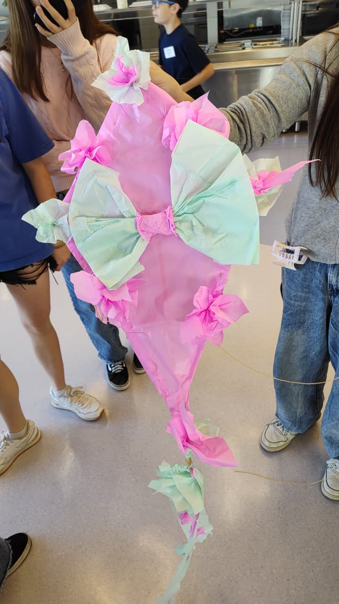
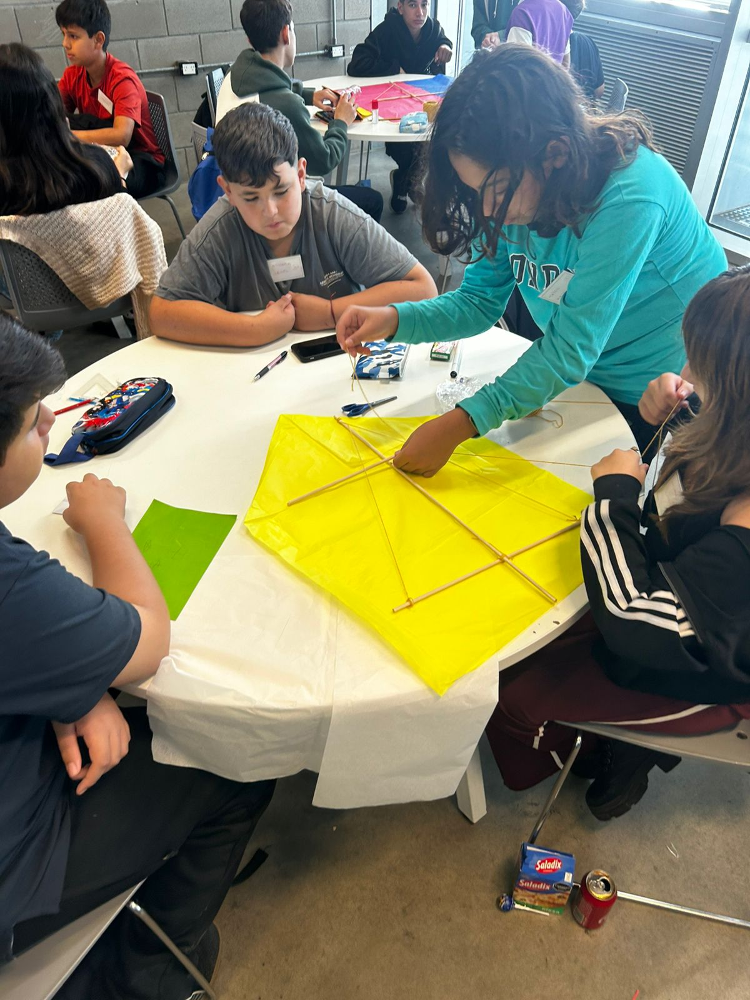

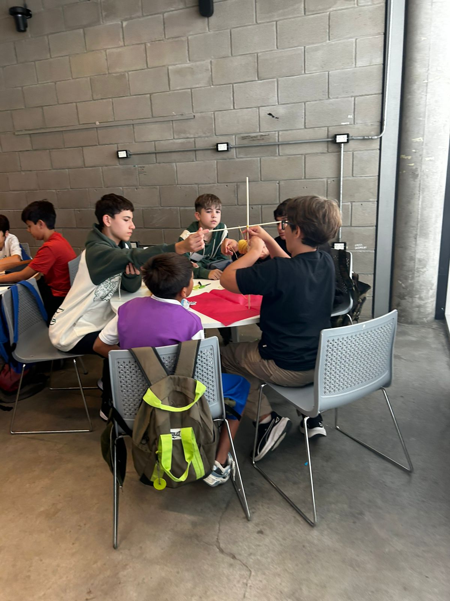
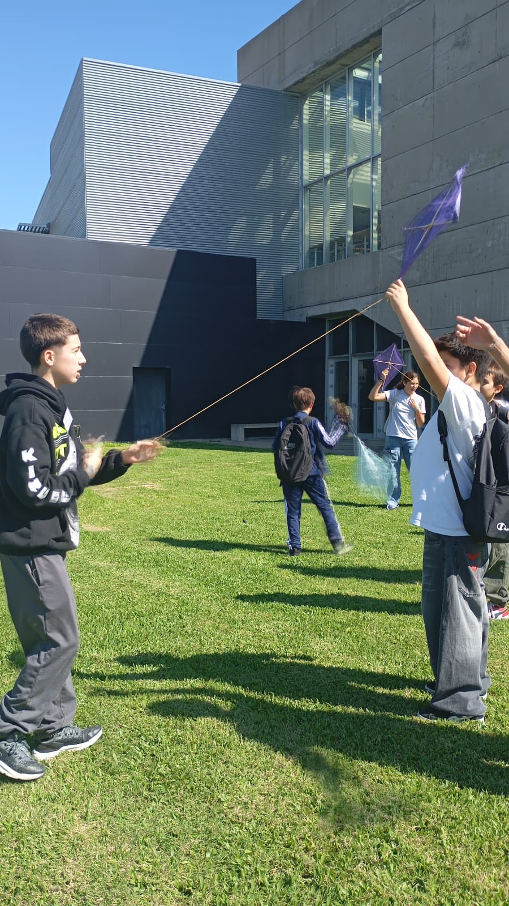
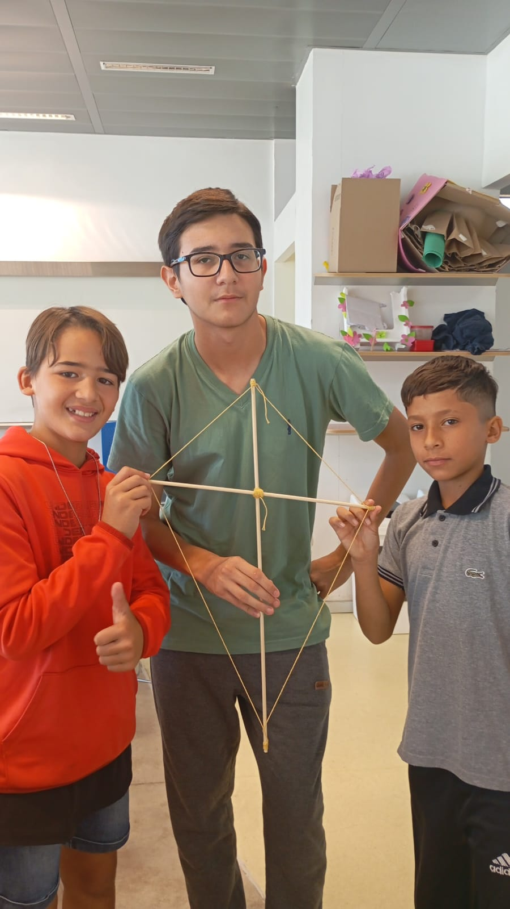
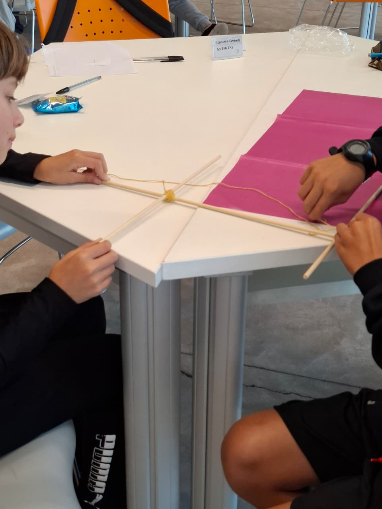
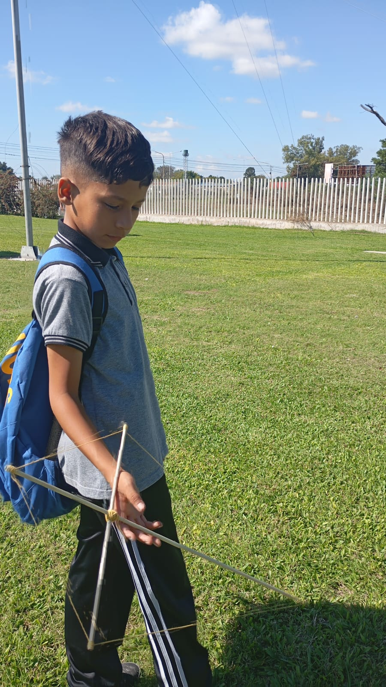


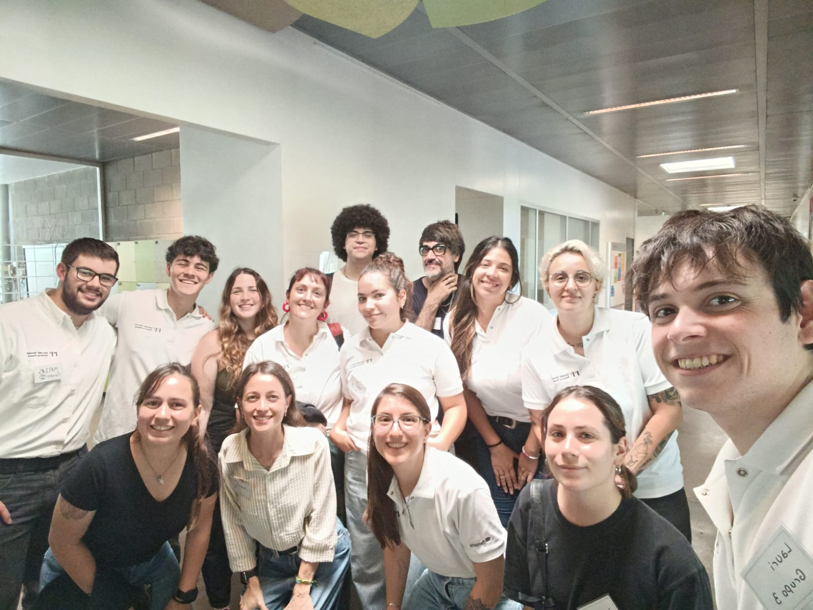


CITgrip: Rehabilitador de Manos
Acompañamiento al grupo de estudiantes de 5to año en la presentación de su proyecto biomédico en la muestra de Escobar, un desarrollo electromecánico con base técnica que el equipo viene desarrollando desde el año pasado (2025).
Compromiso Ético y Claridad Técnica
El proyecto CITgrip se basa en un guante mecánico automatizado para la rehabilitación motriz pasiva y activa de personas que han sufrido accidentes cerebrovasculares. Es un desarrollo sostenido en el tiempo que las estudiantes comenzaron en 2025 y continuaron perfeccionando durante este ciclo.
Lo más destacado de la jornada fue la solidez técnica y claridad con la que el grupo de estudiantes explicó el funcionamiento de los sensores flexores, actuadores lineales, servomotores y la calibración del software de control ante los evaluadores y el público general.
Presentación en Escobar

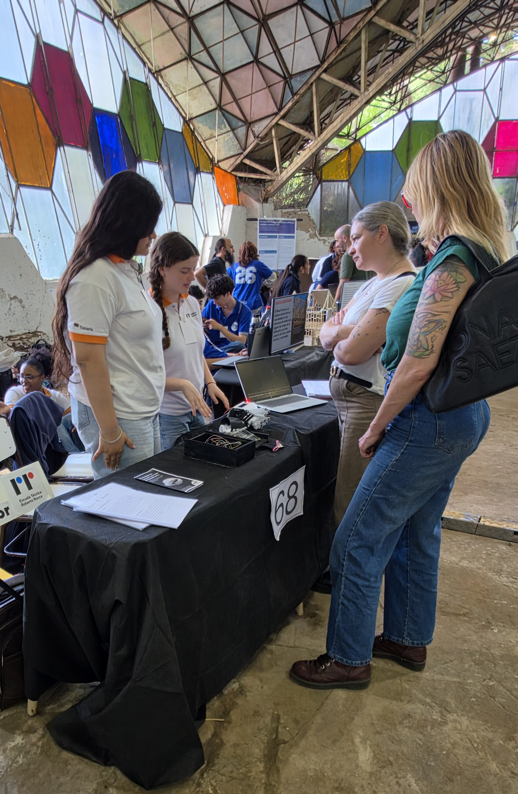
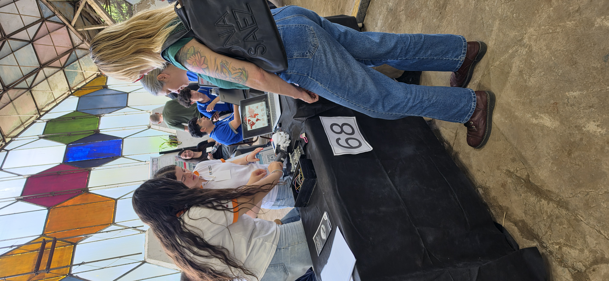
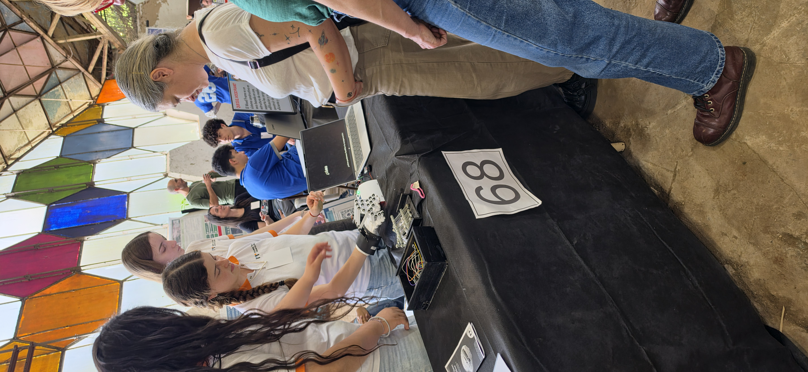


Fuentes Reguladas Variables: El Valor Pedagógico del Error Real
Como alumno de 4to año de la ETRR fabriqué mi propia fuente regulada, un circuito que marcó para siempre mi vocación electrónica. En 2026, al asumir por primera vez un curso desde principio de año, busqué replicar esa experiencia. Las placas físicas no encendieron a tiempo por desajustes en el fresado CNC, pero el resultado formativo superó cualquier expectativa idealista.
De la Pantalla al Cobre: La Dureza de la Realidad Física
1. Simulación en LTspice
La simulación abarcó hasta el capacitor encargado del ripple (Vpp), con el objetivo de tener un primer contacto con la herramienta, aprender a implementar un transformador de dos bobinas, armar un puente de diodos y verificar teóricamente la rectificación en cada etapa del circuito.


2. Diseño en KiCad
Cada grupo desarrolló un diseño propio para su placa respetando las convenciones trabajadas en clase, incorporando las herramientas de KiCad como base sólida para sus futuros diseños electrónicos en los años superiores de la especialidad.


3. Fresado CNC
Tras ver buenos resultados previos de placas mecanizadas en CNC, busqué replicar la experiencia para que los estudiantes se familiarizaran con la máquina y obtuvieran terminaciones prolijas. Conté con la colaboración de un estudiante de 7mo año, pero mi poca experiencia previa con la CNC y la falta de definición en ciertos parámetros guía generaron inconvenientes que dificultaron la soldadura, logrando que funcionaran 2 de las 7 placas presentadas.

4. Defensa y Exposición en MAPE
Lejos de ocultar los inconvenientes, los estudiantes se pararon frente al público y explicaron con total transparencia las razones por las cuales los resultados no salieron como esperábamos, todas las mejoras posibles y todo lo que lograron aprender durante el desarrollo y la reflexión sobre el proceso.


MAPE: Encuentro de Proyectos y Comunidad
MAPE es el espacio institucional que congrega a familias, evaluadores y a la comunidad cercana para compartir las producciones técnico-pedagógicas desarrolladas por los estudiantes a lo largo de todo el ciclo escolar.
Cátedras y Proyectos Expuestos
En MAPE acompañe y coordine los stands de los proyectos desarrollados bajo mi seguimiento en diferentes niveles de la especialidad técnica:
MINI Titan


Consolidación de Cátedra y Metas Ciclo 2027
La experiencia reflexiva de 2026 deja un piso sólido y líneas de acción concretas para el próximo año lectivo, asegurando que cada lección aprendida se traduzca en una mejora directa de la experiencia formativa de los futuros técnicos.
Fabricación artesanal de PCB (4to año)
Tras los inconvenientes con la CNC, junto a mi pareja pedagógica decidimos volver el próximo año a un proceso artesanal similar al que realicé como estudiante (definiendo entre papel transfer + planchado o pintura y pantógrafo, ambos seguidos de atacado con cloruro férrico). Esto permitirá que los estudiantes puedan fabricar placas por su cuenta (incluso en sus casas con las medidas de seguridad adecuadas) y requerirá ajustar la planificación para asignar más tiempo de taller.
Continuidad de exposiciones orales (4to año)
Sostener las defensas en el auditorio a partir de experiencias significativas para los estudiantes, entrenando de manera sistemática la postura escénica, el vocabulario técnico y la respuesta a preguntas no preparadas.
Proyectos integradores continuos
Implementar prácticas enfocadas en pequeños proyectos sostenidos a lo largo del año para nutrir las muestras y evitar lagunas temporales que hagan perder el hábito en tareas clave como soldadura o diseño.
Guías prácticas con resolución
Ampliar la documentación entregada en clase sumando guías de ejercicios resueltos y material práctico de apoyo para que los estudiantes ganen seguridad frente a exámenes y prácticas de laboratorio, tanto en mis materias como en el resto de la especialidad.
Registro sistemático y archivo ordenado
Estandarizar la captura fotográfica y en video de todas las prácticas áulicas, clasificándolas en el momento por fecha y actividad para evitar pérdidas de material y agilizar la curaduría de futuros portafolios.
"Enseñar electrónica es encender la chispa de la curiosidad técnica y demostrar que el fallo es solo el primer paso hacia una solución sólida."
Matías Mansilla · Técnico Electrónico · Escuela Técnica Roberto Rocca